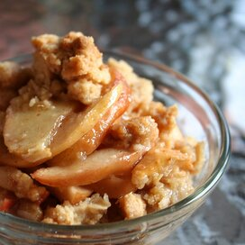

Apple Crisp Recipe

Description
A simple dessert that's great served with ice cream.
The taste of the apple paired with the sweet, earthy taste of the cinnamon makes for an earth shattering dessert that the family will love.
Ingredients
- 10 cups all-purpose apples, peeled, cored and sliced
- 1 cup white sugar
- 1 tablespoon all-purpose flour
- 1 teaspoon ground cinnamon
- ½ cup water
- 1 cup quick-cooking oats
- 1 cup all-purpose flour
- 1 cup packed brown sugar
- ¼ teaspoon baking powder
- ¼ teaspoon baking soda
- ½ cup butter, melted
Steps
- Preheat oven to 350 degrees F (175 degree C).
- Place the sliced apples in a 9x13 inch pan. Mix the white sugar, 1 tablespoon flour and ground cinnamon together, and sprinkle over apples. Pour water evenly over all.
- Combine the oats, 1 cup flour, brown sugar, baking powder, baking soda and melted butter together. Crumble evenly over the apple mixture.
- Bake at 350 degrees F (175 degrees C) for about 45 minutes.